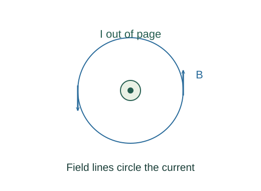

Derive arc, toroid, dipole fields and wire forces
Every arc element is perpendicular to the radius and contributes in the same axial direction at the centre. Use ds = R dφ.
What the symbols mean
R,φ: circular-arc radius and angle in radians; N: toroid turns; d: parallel-wire separation; μ: loop dipole moment.
When this applies
Magnetostatics in vacuum; ideal tightly wound toroid; long thin wires; dipole approximation only far from the loop.
Developing the argument

Integrate Biot–Savart around an arc
Every arc element is perpendicular to the radius and contributes in the same axial direction at the centre. Use ds = R dφ.
Apply Ampère’s law inside a toroid
A circular path within the winding encloses NI and has constant tangential B by ideal symmetry.
Use one wire’s field on the other wire
At separation d the first wire’s field is μ₀I₁/(2πd). Multiply by I₂L for a perpendicular current–field angle.
Integrate a loop’s axial field
On the loop axis, transverse components cancel. Biot–Savart gives Bz = μ₀IR²/[2(R² + z²)³ᐟ²]. For z ≫ R substitute μ = IπR².
A worked example
For a full circle φ = 2π, the central arc formula reduces to B = μ₀I/(2R).
Derivation behind this calculation ↗A point to keep straight
Parallel currents attract for the same current direction; opposite directions repel. Use vector directions before interpreting a signed force.
Check the assumptions and derivation ↗